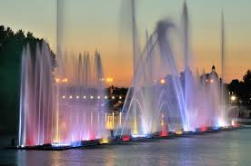
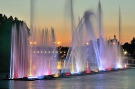

День моря: як океан рятують за кордоном і що можна зробити в Україні
Океан — збалансована єдина система, механізми захисту і відновлення якої добре працювали мільйони років, але останні десятиліття вони не справляються і океан просто волає про допомогу.
Найбільшу загрозу морям і океанам становлять наслідки поведінки людства, що призводить не лише до фізичного і хімічного забруднення вод, а й до різких кліматичних змін. В результаті порушуються екосистеми, гинуть морські тварини і птахи, а в кінцевому рахунку страждають і самі люди.
Подорожі по Вінниці
Вінницька площа - центральний майдан міста, де можна насолодитись архітектурою, прогулятись бульваром та відвідати кав'ярні.
Фонтан "Рошен" - великий фонтан, з якого водоспад падає на річку Південний Буг, світиться у вечірній час і створює чудову атмосферу.
Соборний собор Святого Миколая - історична православна споруда з дивовижними іконами та архітектурою.
Національний меморіальний музей-заповідник М. Коцюбинського - музей українського письменника Михайла Коцюбинського, де представлена його творчість та особисті речі.
Бізнес-центр "Мегамолл" - для шопінгу та розваг, якщо ви цікавитесь покупками та сучасними розвагами.
Вінницький зоопарк - якщо ви цікавитесь тваринами та природою, це чудове місце для відвідування.
"Музей Поділля з мініатюр" - унікальний музей, де представлені мініатюрні копії архітектурних пам'яток регіону.
Ресторан "Перша гірка" - для смачної української кухні та атмосфери..
.jpg) 

.jpg)
.jpg)